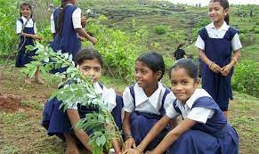
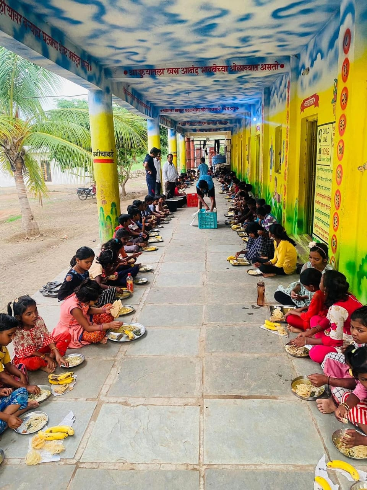
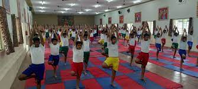

We at Sindfana Prathmik Ashramshala provide education to classes from 1st to 7th in Marathi medium. We prepare them for life. We teach them not only books but also focus on their behavioral upgrading. We teach them equality and diversity. We try to create a better human being from each child.
We teach children that Nature is our mother and we should protect it. So, in order to make them realize this every year we conduct tree plantation. Here is a glimpse:
As the saying goes, "Health is wealth." In our Health course, we prioritize the well-being of our students by providing a balanced diet, including fruits, pulses, and green leafy vegetables.
Here is a glimpse of our Health course:
As an active body helps to create a focused mind, we prioritize physical activity for our students. Various sports activities are conducted, and it is compulsory for each student to participate.
Here is a glimpse of our sports activities:
